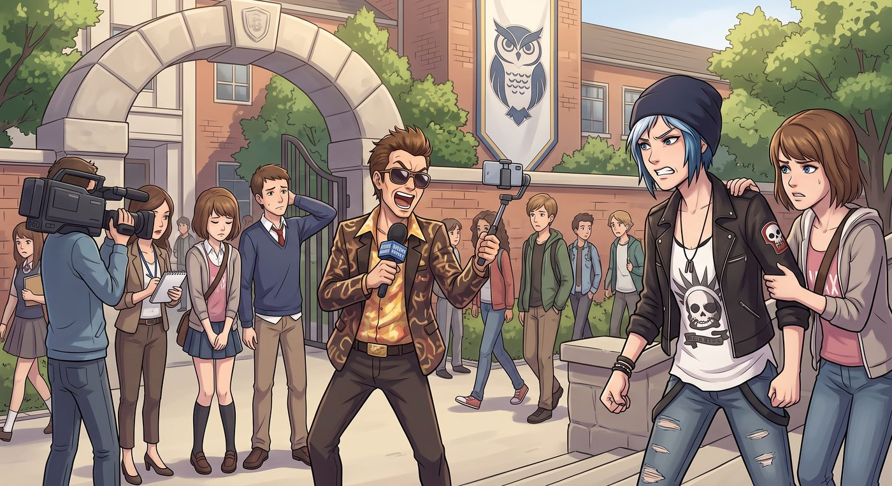

逼格保衛戰

一、煩人精又來了
儘管案件早已塵埃落定,偶爾還是會有嗅覺靈敏的八卦媒體或自稱「真實犯罪頻道」的 YouTuber,扛著攝影機摸到 Blackwell 校門口,對著鏡頭添油加醋地重述一遍陳年舊案,順便採訪幾個看起來一臉茫然的路過學生。
這天午休,又是這麼一齣。一個戴著墨鏡、語速浮誇的網紅主播,舉著自拍杆堵在校門口,對著鏡頭聲嘶力竭地喊著「各位觀眾,我現在就站在傳說中的暗房殺人案現場」,身後幾個被硬拉去「隨機採訪」的學生,一臉不耐煩又不敢直接翻臉的窘迫表情。
Chloe 站在不遠處,已經捏緊了拳頭,一副準備衝上去爆粗口的架勢。
還沒等她開口,Victoria 已經率先一步走了過去,居高臨下地站定,語氣冷冽得像刀子。
「先生,」她開口,聲音不大卻帶著壓迫感,「這裡是私人校產,你未經允許擅自進行商業拍攝,已經涉嫌侵權和騷擾。我這通電話,」她揚了揚手機,「只要一撥出去,校方律師團隊十分鐘內就會到場,到時候你的頻道,大概會多一條『侵犯校園隱私被起訴』的新聞素材,說不定流量還更好。」
那位主播臉上的興奮瞬間僵住,支支吾吾了兩句,自知討不到便宜,悻悻然地收起自拍杆,帶著攝影師灰溜溜地離開了。
二、不是幫你
Chloe 有點意外地看著 Victoria,難得真心實意地道了聲謝:「謝了。」
「不用謝,」Victoria 卻立刻撇清,語氣裡帶著慣有的高傲,「我不是在幫妳。」她環顧一圈校門口重新恢復平靜的景象,語氣淡淡的,「這些煩人精天天堵在校門口大呼小叫,拉低的是整間學校的逼格。學校逼格低了,我這張校友身份證明,以後放在履歷上也跟著掉價——我這是純粹為了自己的利益考量,跟妳沒有半點關係。」
Chloe 挑眉,笑意卻壓不住地浮上來:「妳這說法,還挺一貫的。」
「不然呢?」Victoria 甩了甩頭髮,轉身快步離開,尾音卻沒有平常那麼銳利。
三、教室裡的閒聊
午休結束,教室裡的同學還在議論剛才那場鬧劇。
「這已經是這個月第三撥了吧,」有人抱怨,「學校也不派個像樣的保安,每次都靠學生自己轟人。」
Chloe 靠在椅背上,故意提高了音量,語氣裡帶著毫不掩飾的譏諷:
「說真的,我一直很好奇,」她慢悠悠地開口,「學校每年編列的安保經費,到底都花到哪去了?怎麼堵了這麼多次,校門口翻來覆去就只有 Speed 一個保安在硬撐?該不會是……某些位高權重的人,把這筆錢中飽私囊了吧?」
這句話說得不算小聲,恰好被路過走廊、正在巡視的 Wells 校長聽了個正著。他臉色瞬間沉了下來,快步走向教室門口,一副準備當場發作的架勢。
四、危機公關再現
就在這時,藝術老師 Ms. Whitfield 恰好從旁邊經過,見狀立刻眼疾手快地攔在校長面前,一臉「靈光一閃」的興奮表情。
「校長,」她壓低聲音,語速飛快,「這正是個絕佳的機會啊!您可以順勢向上級教育局申請一筆額外的安保經費,理由就是『學校因應校友案件後續的社會關注度,亟需強化校園安全設施,保障學生受教權益』——這既能解決眼前的實際問題,又能展現您『重視學生福祉、積極爭取資源』的治校形象,說不定還能上一次地方新聞。」
Wells 校長臉上的怒氣以肉眼可見的速度消散,取而代之的是一種恍然大悟的驚喜。
「妳說得對,」他摸著下巴,連連點頭,「這確實是個機會。」他轉身叫來旁邊的教務主任,「馬上起草一份申請報告,標題就用……『因應社會高度關注,強化校園安全刻不容緩』。」
Chloe 隔著教室門看著這一幕,一股火氣「噌」地竄了上來——明明是自己隨口一句諷刺,轉眼卻要被包裝成校長的英明決策,她再也按捺不住,深吸一口氣,就要衝上前去,當面把這套虛偽的把戲戳破。
話才剛到嘴邊,一隻手猛地從側面伸過來,死死摀住了她的嘴。
「妳瘋啦,」Max 壓低聲音,語氣裡帶著又急又無奈的緊張,一把把她往後拽,「妳好不容易才回到學校,這次真要當著校長的面拆穿他,妳是想再被踢出去一次嗎?」
Chloe 被摀著嘴,含糊不清地掙扎了兩下,眼神裡還是一副不甘心的架勢。
Max 看著她這副樣子,想了想,忽然壓低聲音,神秘兮兮地補了一句:「而且,妳想想,安保經費一到位,Speed 的工作量能減輕不少——他不用再一個人到處巡邏趕人,妳們不就有更多時間,窩在傳達室裡討論妳們那些地下樂團和黑膠唱片了嗎?」
Chloe 掙扎的動作瞬間停住,眼神裡的火氣以肉眼可見的速度消散,取而代之的是一絲意動。
Max 這才鬆開摀著她嘴的手,挑眉看她。
Chloe 悻悻然地順了順被扯亂的衣領,那股原本蓄勢待發的怒火,徹底洩了氣。
「……行吧,」她從牙縫裡擠出這句話,語氣裡帶著明顯的妥協,「看在能跟 Speed 多聊會兒天的份上,這次就放過那個老狐狸。」
Max 忍俊不禁,拍拍她的肩膀,一副「這才乖」的表情。
Chloe 隔著教室門,看著這一幕似曾相識的鬧劇,忍不住嗤笑一聲,轉頭跟同桌咕噥:「妳看,罵他中飽私囊,他都能給自己找補成『積極作為』,這公關轉換速度,比我換衣服還快。」
「而且,」同桌壓低聲音補充,「說不定這次真能多請幾個保安,也不是壞事。」
Chloe 想了想,聳聳肩,認命地嘆了口氣:「行吧,只要 Speed 不用再一個人硬扛,管他這錢是靠什麼理由申請下來的。」